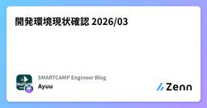

SMARTCAMP Engineer Blogのフィード
https://zenn.dev/p/smartcamp
SMARTCAMPに所属するエンジニアの個人記事を集めています。 記事の内容は個人の見解であり、社内でのレビュー等は行っておりません。
フィード

開発環境現状確認 2026/03
SMARTCAMP Engineer Blogのフィード
!この記事は SMARTCAMP Engineer Blog のリレー記事企画：「開発環境」のリレー記事、始めます の1本目の記事です。最近このタイトルの記事をよく見かけるので自分も便乗することにします。 GUI周り エディタRust製の Zed を使ってます。以前は Cursor を使っていたんですがあまりにも動作が重すぎるため移行しました。起動も早いし動作も軽いしで快適です。テーマは Catppuccin をカスタマイズしてちょっぴり透過したり背景色を揃えたりしてます。ずっとダークモードで使ってましたがなんかライトモードのほうがおしゃれだし目に良さそうなので最...
2日前
「開発環境」のリレー記事、始めます 1
1
SMARTCAMP Engineer Blogのフィード
はじめにこんにちは、ながひろと申します。今回は社内のメンバーで「開発環境」をテーマにしたリレー記事を始めていく案内の記事になります！ 「開発環境」の定義ここでの「開発環境」は、かなり広い意味で使っています。ターミナルやエディタといったソフトウェアはもちろん、実際の動作環境、さらにはキーボードやマイクといった入力デバイスまで、開発体験に関わるものはすべて開発環境として扱う想定です。 なぜ「開発環境」？最近、AI関連の話題を聞かない日はないと思います。毎日どこかで話題になっています。そしてその波は、開発の現場にも確実に押し寄せています。CursorやClaude Co...
2日前

実務で役立つCS(コンピュータサイエンス)のすゝめ 〜社内LT会レポート〜
SMARTCAMP Engineer Blogのフィード
はじめにこんにちは!りゅうです🌟先日、社内のLT会で「実務が100倍面白くなる『CS(コンピュータサイエンス)』のすゝめ」というテーマで発表しました。25新卒として入社してから約半年、実務を通じて感じたことをまとめた内容です。僕は大学・大学院で情報工学(CS)を専攻していたのですが、学生時代はずっと「この知識、実務で使うのかな...?」と不安に思っていました。でも実際に働いてみると、想像以上にCSの知識が役立つ場面が多くて驚きました!この記事では、そんな「学生時代の悩み」から「入社後の発見」まで、具体的なエピソードを交えながらお伝えします。 この記事で分かること学生時...
2ヶ月前
役割から考えた方が課題のイメージしやすいという考察
SMARTCAMP Engineer Blogのフィード
最近社会学の入門本を読みその時に頭に浮かんできた考えを書いてみます！あくまで一考察であり事実ではなく、裏取りも行っていません、学問に関しても素人なのでお手柔らかにお願いします。 社会学での役割社会学での役割は各個人や集団が社会内で果たす振る舞いのことです。 役割には期待される行動や責任があります。社会から期待されている役割なので例で言うと、学生・主婦・営業などです。理論によって役割の見なし方や定義が違うのですがこの記事内では以上の理解で進めます。 役割から課題を考える社会に役割があるのであれば、社会的課題は共通の役割を持った人間が同じ悩みを抱えていおり顕在化するのではな...
2ヶ月前
before_action、どう使う？ Fizzyのコードを読んで整理してみた
SMARTCAMP Engineer Blogのフィード
はじめにこの記事は、Railsで開発をしていて before_action の使いどころに迷ったことがある方に向けて書いています。最近Railsで開発をしていて、before_action の使い方についてコードレビューで指摘を受けました。具体的には、リソース取得（@card = Card.find(params[:id]) のような処理）を before_action で書いていたところ、「アクションメソッドが増えて only オプションを使い始めると、どのアクションでどの変数が使えるか把握しづらくなる」という理由で、やめてほしいと言われました。その通りだなと納得はしたもの...
3ヶ月前
「それってあなたの感想ですよね？」と言わせない：生成AIプロダクトの価値を証明する方法論
SMARTCAMP Engineer Blogのフィード
1. 導入：「それってあなたの感想ですよね？」問題2025年12月、UC Berkeleyらの研究チームが発表した大規模調査「Measuring Agents in Production」は、衝撃的な事実を明らかにした。本番環境で稼働するAIエージェントの74%が、主に人間による評価に依存している。そして75%が、形式的なベンチマークを持たずに運用されている。これは何を意味するのか？ビジネスにおいて、意味のある結果を出すためには、一定の根拠を示す必要がある。しかし、この調査結果が示すのは、生成AIプロダクトの多くが、客観的な評価基準を持たずに運用されているという現実だ。「こ...
3ヶ月前
既存プロダクトの仕様の調査してみる
SMARTCAMP Engineer Blogのフィード
はじめにこの記事はSmartCampアドベントカレンダーの記事になっています！https://qiita.com/advent-calendar/2025/smartcampプロダクトをリニューアルする際に、リニューアル前のプロダクトの仕様を調査するとういことを行ったのでその知見を書きます。 今回調査したプロダクトの概要Rails(MVVC)RailsのviewでReact, Vue, jQueryが入り混じっているかなり負債があるweb 方針の作成まず調査する方針ややり方を決めます。コードから調べると使っていなかったり表示してなかったりするものが存在し...
3ヶ月前
プロダクトを遊びの視点で見るとちょっと面白い
SMARTCAMP Engineer Blogのフィード
プロダクトを遊びの視点で見てみるこの記事はSmartCampアドベントカレンダーの記事になっています！https://qiita.com/advent-calendar/2025/smartcamp遊びの視点からプロダクトを見て気づいたことを書いてみます！ 遊びとはこの記事内での遊びの定義はロジェ・カイヨワの定義している遊びという事にします。内容はロジェ・カイヨワ著遊びと人間に著されていますが遊びの視点でプロダクトを見るに当たって少し説明します。 文化は遊びから文化は遊びから生まれたという主張が本の中でされています。遊びは文化から発生したものではなく。遊びと人間は...
3ヶ月前
ECS 2025年アップデート 俺的まとめ
SMARTCAMP Engineer Blogのフィード
2025年のECSアップデートの中から、開発・運用フローに直接影響を与える重要機能をピックアップしてまとめました。 ECS Express Modeこれまで「とりあえずコンテナを動かしたい」という場面ではApp Runnerが選ばれがちでしたが、ECS側の初期構築のハードルを下げる機能として実装されました。コンテナイメージとポートを指定するだけで、ALB、ログ、Auto Scalingなどの構成を含んだ環境が自動構築されます。 ECSわからん...という方はとりあえずECS Express ModeをFargateの基本的な構成であり、必要なリソースも作成してくれるので、...
3ヶ月前
令和のTDD AIが書いて、エンジニアが仕上げる新卒流実践法
SMARTCAMP Engineer Blogのフィード
この記事はスマートキャンプ株式会社のアドベントカレンダー 2025 の18日目の記事です！ はじめにこんにちは、りゅうです！新卒1年目のエンジニアとして、TDD（テスト駆動開発）に取り組み始めたとき、正直なところ「難しそう...」と思っていました。テストを先に書く？ 実装の前にテストの設計を考える？ 経験が浅い自分にできるのか不安でした。でも、AIコーディングアシスタント（Cursorとか）が登場して、この状況が変わりました！AIがテストコード生成をサポートしてくれるおかげで、新卒でもTDDが実践しやすくなったんです。ただAIに丸投げするだけじゃダメなんですよね。今回は、標準...
3ヶ月前
チーム開発の中で、快適なコードレビュー環境を目指してみる
SMARTCAMP Engineer Blogのフィード
はじめにこの記事では、ローカルのレビュー環境を快適にするために使っているツールの紹介をしています！チームでの取り組みや、マインド的な要素は扱っていないのでご注意ください。チームでの開発をしていると、複数人から様々なタスクのコードレビューがやってきます。この記事では、そのような環境で自身の開発業務に支障なく快適なコードレビューを進めるために、私が取り入れているツール群を紹介しようと思います。特にGit Worktree Runnerとdotenvxの組み合わせは本当に快適です。 1. Git Worktree Runner（gtr）gtrの良さ・詳細については、Zenn...
3ヶ月前
rubyでbitの除算を実装してみた（ベンチマーク付き）
SMARTCAMP Engineer Blogのフィード
この記事はスマートキャンプ株式会社のアドベントカレンダー 2025 の16日目の記事です！ はじめにこんにちは、りゅうです！先日、会社の先輩方と参加した「逆リファクタリングバトル」で、ビット演算を使った剰余（余り）計算の実装に挑戦しました！イベント当日は時間内に完成しなかったのですが、その後完成させることができたので、今回はその内容を紹介します。Rubyの%演算子が抽象化している計算処理を、あえてコンピュータアーキテクチャレベルの算術演算で実装してみました。正直、実用性はゼロですが、コンピュータの仕組みを理解する良い勉強になりました！参考にした本：パターソン＆ヘネシー『コン...
3ヶ月前
会話っぽいリアルタイムなチャットを作った話
SMARTCAMP Engineer Blogのフィード
はじめにこちらスマートキャンプのアドベントカレンダー13日目の記事なっています！学生時代に作ったアプリを振り返ってアイデア出す一連の流れをアウトプットしてみました！ 作ったもの複数人でリアルタイムに会話に近いチャットができるWebアプリです。https://www.youtube.com/watch?v=Pt84Y2GsbVw 使ったもの数年前に作成したものなので少し技術スタックが古いです。 フロントエンドReactStyled-componentSocket.io バックエンドGoGingo-socket.io アイデアの出し方...
3ヶ月前
チームに合わせたplan.md生成・管理システムを構築する
SMARTCAMP Engineer Blogのフィード
!この記事は、SmartCamp Advent Calendar 2025 15日目の投稿です。この記事では、弊チームの開発フローの課題を解決するために考えた、SDDアプローチを小さく取り入れたplan.md生成・管理方法について紹介します。 SDD（仕様駆動開発）について2025年は生成AIによるコーディングエージェント元年とも言える年になりました。多様なツールやサービスが登場し、実際の開発現場での活用が進むにつれて、新たな課題が浮上してきています。その中でも、仕様や設計が曖昧なままAIにコーディングを任せることによって意図しない動作やバグを引き起こしたり、後の工程で手戻...
3ヶ月前
WordPressのカスタムHTMLの自由度
SMARTCAMP Engineer Blogのフィード
はじめにこちらスマートキャンプのアドベントカレンダー14日目の記事なっています！WordPressのカスタムHTMLがWordPressがかなり自由度が高かったので備忘録として残しておきます。 WordPressのカスタムHTMLWordPressのカスタムHTMLブロックは以下のようなものです。 ブロックのコードブロックのコードは以下になっており、特別HTMLタグで囲まれているわけではなく、ただWordPressコメント囲まれている箇所がカスタムHTMLと解釈されます。<!-- wp:html --><div>カスタムHTML<...
3ヶ月前
Google MeetのAI議事録を自動でMarkdownファイルに変換する 【GAS】
SMARTCAMP Engineer Blogのフィード
!この記事はSMARTCAMP Advent Calendar 2025 の12日目の記事です。 はじめにみなさんはGeminiによるGoogle Meetの議事録生成機能を使ったことがありますか？筆者はもっぱら1on1で使用しています。ミーティングが終了して少しすると、議事録としてGoogle ドキュメントが自動で生成されてメールで送信されるのでとても便利です。内容としても「要約」・「文字起こし」の2セクションで構成されており、形式を問わず議事録として扱う分には何ら問題ないと思います。(そして現状特に問題を感じていない方にはこの記事は刺さらないかもしれない)筆者は日...
4ヶ月前
日本の住所の表記ゆれ vs 正規化を阻む住所
SMARTCAMP Engineer Blogのフィード
こんにちは！スマートキャンプ株式会社のcruiseです。この記事はスマートキャンプ株式会社のアドベントカレンダー 2025 の11日目です。 同一の住所か判定したいみなさんご存知の通り、日本の住所はかなりの表記ゆれがあることで知られています。例えば、弊社オフィスの住所はコーポレートサイトによると、次のように記載されています。〒108-0014 東京都港区芝5-29-11 G-BASE田町 13階しかし、以下の表記であっても、弊社オフィスを指す住所ですよね...?東京都港区芝5-29-11 G-BASE田町13階東京都港区芝5-29-11-13F東京都港区芝5丁目...
4ヶ月前
unifiedでHTMLからWordPressに変換する機構を作成した"
SMARTCAMP Engineer Blogのフィード
この記事はSmartCampアドベントカレンダーの10日目の記事になっています！https://qiita.com/advent-calendar/2025/smartcamp はじめに既存のHTMLファイルからWordPressブロックに変化する、みたいなことを行ったので備忘録として残しておきます。WordPressの知識については省きます。 行ったこと実際にやったことは以下です。既存のHTML -> unifiedでHTMLをパース -> 自作したunifiedプラグインでHTMLタグをWordPresブロックに変換 -> 変換したWordPres...
4ヶ月前
WordPressブロックの形式
SMARTCAMP Engineer Blogのフィード
この記事はSmartCampアドベントカレンダーの9日目の記事になっています！https://qiita.com/advent-calendar/2025/smartcamp はじめにWordPressブロックは実はカスタマイズされたHTMLであり、自力で直接書くことができます。ブロックの記事も少ないのでここに書いておこうと思います。 WordPressブロックとはWordPress5.0から採用されているブロックエディターで使われている、記事を構成するパーツのことです。例: Paragraphブロック 主な形式WordPressブロックは主にWordPress...
4ヶ月前
プロジェクトが迷子にならないチーム運営：オーナー制度をはじめてみた
SMARTCAMP Engineer Blogのフィード
!この記事は SMARTCAMP Advent Calendar 2025 の8日目の記事です。 はじめにこんにちは。初めまして。まるべいじ（malvageee）と申します！今回は、チーム内で機能開発の進捗が追いづらくなり、動きにくさが生まれていた状況を改善するために導入した「プロジェクトオーナー制度」について紹介します。私が率いている開発チームでは、複数の機能開発が同時に走っており、プロジェクトの透明性が低下するという問題を抱えていました。結果として、誰がどこまで進めているのかがわかりにくく、チーム全体が自律的に動きづらい状態になってしまいました。そこで改善策として導...
4ヶ月前